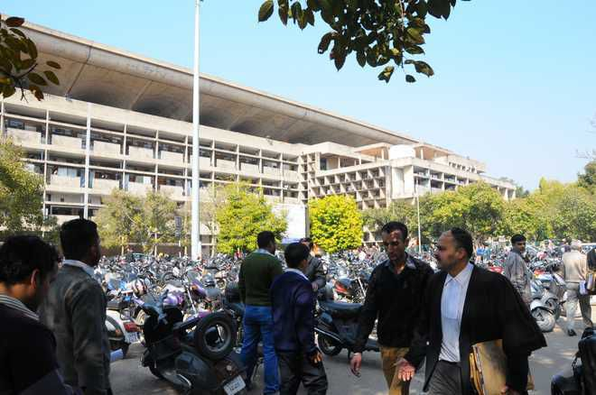

Breaking News: Can still file fresh cases under repealed laws, clarifies Punjab and Haryana High Court
The High Court has explicitly directed that no objections will be raised by the High Court Registry regarding the filing of cases under either set of laws.
Read MoreLatest News
-

65 people missing as 2 buses are swept away into Trishuli river by landslide in Nepal
The 2 buses carrying 65 passengers go missing in the Trishuli river in the landslides at Simaltal area along the Narayanghat-Mugling road in Chitwan district
-

IAS officer Khedkar tried to press DCP to free man held over theft: Official
Khedkar recently came under the spotlight when she was transferred from Pune to Washim district before the completion of her training after kicking up controversy with demands such as a separate cabin and staff
-

India's population to peak in early 2060s to 1.7 billion before declining: UN
India, which surpassed China as the world's most populous nation last year, will continue to hold that position through 2100